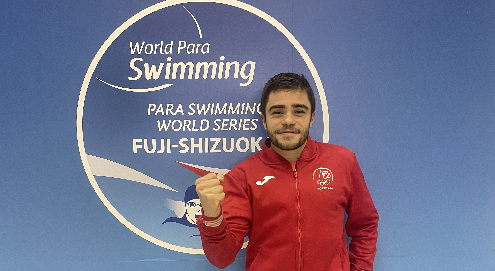
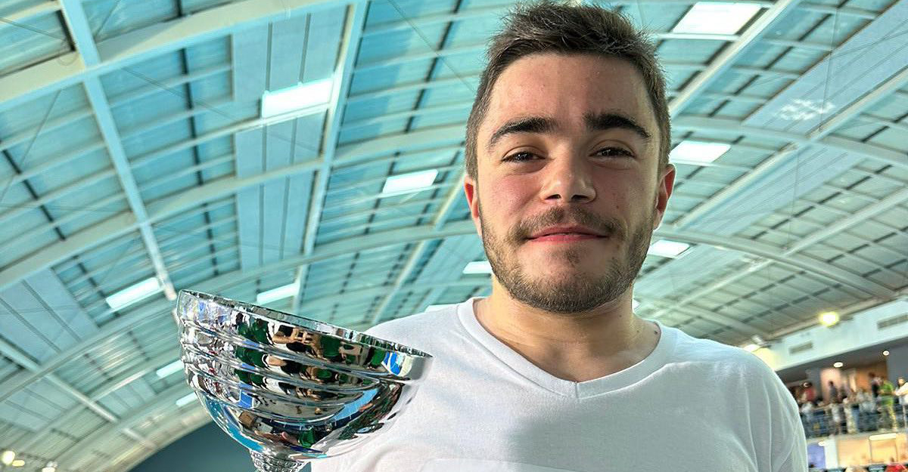
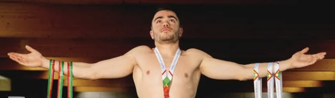

Palmarés
🇵🇹
1
Internacionalização
🏅
30
Pódios em Campeonatos Nacionais
🥇
20
Medalhas de Ouro
🥈
15
Medalhas de Prata
🥉
11
Medalhas de Bronze
📈
1
Recorde Nacional
🌍
2
Top 25 Marcas Mundiais
2024/2025

TOP 5ª MARCA MUNDIAL 2025 50m bruços
TOP 23ª MARCA MUNDIAL 2025 100m bruços
1ª Internacionalização "World Para Swimming Series Fuji-Shizuoka"
46º lugar 50L "World Para Swimming Series Fuji-Shizuoka"
76º lugar 100L "World Para Swimming Series Fuji-Shizuoka"
67º lugar 100B "World Para Swimming Series Fuji-Shizuoka"
56º lugar 100C "World Para Swimming Series Fuji-Shizuoka"
1x🥈 100B "Campeonato Nacional Verão"
2x🥉 50L | 100C "Campeonato Nacional Verão"
🏆 Vice-Campeões Nacionais por Equipas Masculinas
1x🏅 50B "Campeonato Territorial de Verão (Norte) - Natação Adaptada"
1x🥈 100B "Campeonato Territorial de Verão (Norte) - Natação Adaptada"
2x🏅 50B | 100B "I Natação Adaptada Torneio Cidade Rio Maior"
2x🏅 50L | 100B "Campeonato Nacional Universitário PL"
2x🥉 100B | 50L "XI Torneio de Natação Adaptada Cidade do Porto"
1x🏅 100B Torneio Natal Coimbra
1x🥈 50L Torneio Natal Coimbra
2x🥈 50L | 100C Campeonato Nacional Inverno
2x🥉 100L | 100B Campeonato Nacional Inverno Guarda
🏅 Vencedor "Atleta do Ano Desporto Adaptado Santo Tirso"
2x🏅 100B | 100C Campeonato Nacional Universitário PC
2023/2024

🏆 400E Recorde Nacional S9
4x🏅 50L | 100L | 400L | 100C Campeonato Nacional Verão VF Xira
🏅 Nomeação "Atleta do Ano Desporto Adaptado Santo Tirso"
🏆 Vice-Campeões Nacionais por equipas masculinas
2x🏅 50L | 400L Campeonato Nacional Inverno Rio Maior
2x🥈 100L | 200E Campeonato Nacional Inverno Rio Maior
2x🏅 400L | 100C II Troféu Baptista Pereira
1x🥈 50L II Troféu Baptista Pereira
1x🥉 100L II Troféu Baptista Pereira
🏆 Vencedores II Troféu Baptista Pereira
3x🏅 100C | 100L | 400L Campeonato Regional Centro e Norte de Portugal
2022/2023

3x🥈 50L | 400L | 100C Campeonato Nacional Verão VF Xira
1x🥉 200E | 100C Campeonato Nacional Verão VF Xira
2x🥉 100L | 100C Campeonato Nacional Inverno Rio Maior
🏆 Bi-Campeões Nacionais por equipas masculinas
🏆 Vencedores I Troféu Baptista Pereira
2x🥈 100L | 100C Campeonato Nacional
2021/2022

2x🥈 50L | 100L Campeonato Nacional Verão Abrantes
🏆Campeões Nacionais por equipas masculinas